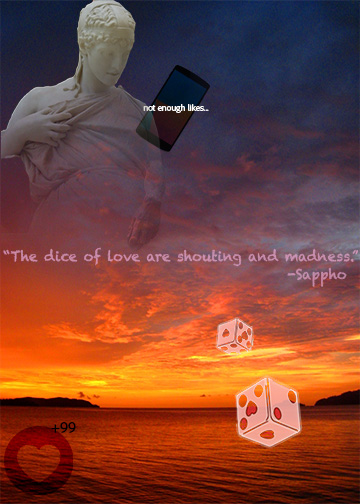
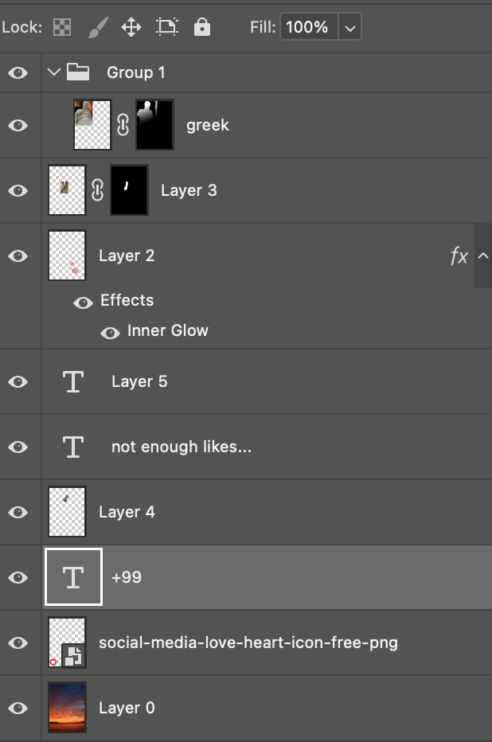
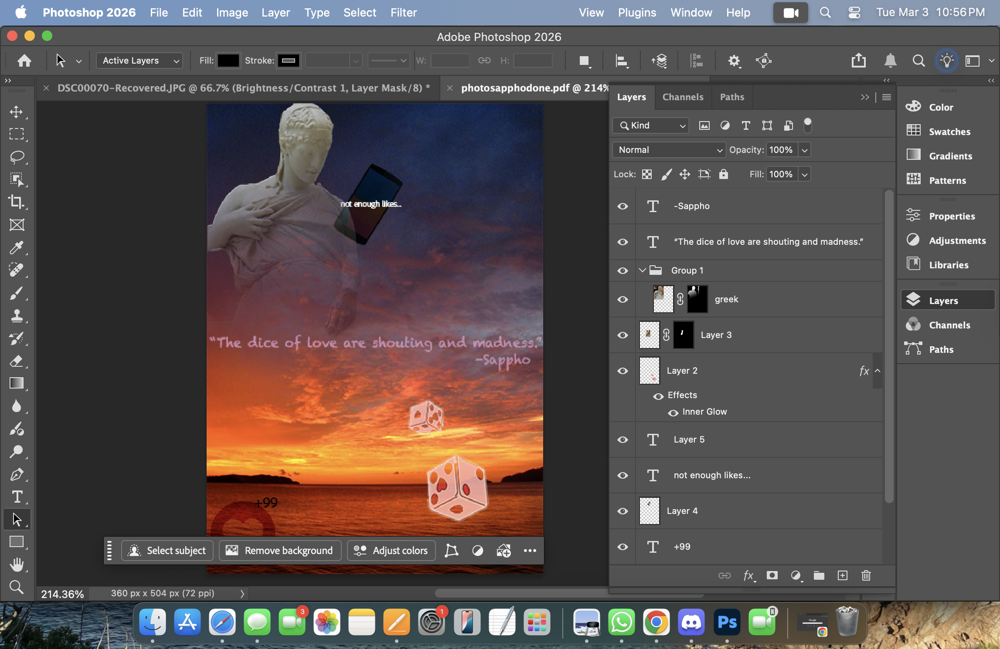

This photomontage shows how love in the digital age has become confused with validation and numbers. The use of Sapphos quote "The dice of love are shouting and madness" represents how love used to be very emotional and raw. The way Sappho and other poets wrote about love is very different from how we see it online today. I used the dice as a symbol of unpredictability and risk in relationships. I also used the dice to bring the quote into the photo visually. The statue of Sappho represents traditional and idealized concepts of romance. The social media heart and the 99 notification on the heart represent that today we seek love and validation through likes and comments. By putting ancient art and modern photos in this photomontage, it shows how we as a society have developed an issue with how we perceive love. The digital age of love is making us lose meaningful connections in exchange for temporary validation.
This photomontage was created using multiple-layered photographs and non-destructive editing processes in Photoshop. I used layer masks to isolate the statue, dice, hand, and digital elements rather than erasing backgrounds. For example, I removed the brick background behind the statue by applying a layer mask and carefully painting over the unwanted areas, instead of using the eraser tool. This allowed me to adjust and refine the edges without permanently deleting any part of the original photograph. Adjustment layers were applied to control color and contrast without permanently changing the actual images. I used blending modes such as Soft Light and Overlay to incorporate the dice and notification elements into the sunset atmosphere, making them feel part of the environment rather than pasted on top. I added a hand to the statue to make it look like Sappho was throwing the dice, and I blended it into the original statue to make it look like one photo. The statue image was sourced from Openverse (Creative Commons), the sunset photograph from Flickr, the smartphone PNG from FreePNGImg, and the heart icon from Adobe Stock. The hand image was photographed by me.

